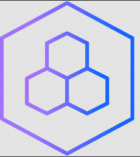

Cloud Pak for Business Automation¶

At this point, you have a working OCP cluster on your platform of choice. Your <ENVIRONMENT_NAME>-env.sh configuration file will contain details of the platform and OCP installation. You will now add to this file, the details of:
1) The Cloud Pak info that you wish to install
2) The services that you wish to install on the Cloud Pak
Step 1: Deploy Cloud Pak¶
Deploying the Cloud Pak for Business Automation only requires two entries to your environment file (/data/daffy/env/<ENVIRONMENT_NAME>-env.sh)
CP4BA_VERSION=
CP4BA_DEPLOYMENT_STARTER_SERVICE=
With these two values, the daffy engine will be able to install the version of Cloud Pak for Business Automation and the and prepare for desired service.
Optional you can specify IFIX:
CP4BA_IFIX=
Valid Options:
CP4BA_VERSION=
- 21.0.3
- 22.0.1
CP4BA_IFIX= (Optional)
- IF005
- IF007
- IF008
CP4BA_DEPLOYMENT_STARTER_SERVICE
-
content
-
decisions
-
content-decisions
-
workflow
-
samples
You can copy the following to your <ENVIRONMENT_NAME>-env.sh
CP4BA_VERSION="22.0.1"
#CP4BA_IFIX=
CP4BA_DEPLOYMENT_STARTER_SERVICE="content"
Options for Cloud Pak
| Service | Components | CP4BA Version |
|---|---|---|
| decisions | odm,bai | 22.0.1 or 21.0.3 |
| content | filenet,cmis,ier,tm,bai | 22.0.1 or 21.0.3 |
| content-decisions | filenet,cmis,ier,tm,odm,bai | 22.0.1 or 21.0.3 |
| workflow | workflow,workstreams,pfs,baw_authoring,case,bai | 22.0.1 or 21.0.3 |
| samples | Depends on sample | 21.0.3 or 21.0.1 |
Run the following command to deploy the Cloud Pak for Business Automation.
/data/daffy/cp4ba/build.sh <ENVIRONMENT_NAME>
When this step is complete, approx 10 minutes depending on your environment, you have the Cloud Pak running. This is just the core Cloud Pak operators, no service is running at this point. The cluster is now ready to deploy the service. At this stage, the cluster consist of IBM Foundation Services and the Cloud Pak for Business Automation operators in the following projects:
-
cp4ba-starter
-
ibm-common-services
Step 2: Deploy Services¶
Deploying the service does not need any new values to your environment file (<ENVIRONMENT_NAME>-env.sh>). It will use the same values during the cloud pak deployment.
CP4BA_VERSION=
CP4BA_DEPLOYMENT_STARTER_SERVICE=
With these two values, the daffy engine will be able to install the version of Cloud Pak for Business Automation and the desired service.
Instead of using the include services, you can also deploy your own sample or the included sample CR files from daffy.
CP4BA_DEPLOYMENT_STARTER_SERVICE=samples
CP4BA_DEPLOYMENT_STARTER_SERVICE_SAMPLE=valid sample name in daffy samples folder
Sample Name
The value you use is without the .yaml in the name
cd /data/daffy/cp4ba/templates/services/samples
To use samples, you would give the name of the sample in this directory.
- ocp-starter-ocs-adp-bai-IF008
- ocp-starter-ocs-bai-content-decisions-workflow-streams-IF007
- ocp-starter-ocs-workflow-IF008
- roks-starter-all-IF008
- roks-starter-nfs-all-IF008
- ocp-starter-ocs-all-22.0.1
- roks-starter-ibm-all-22.0.1
This is just the daffy samples, you can create your own as well. Just put your CR in this folder and add your name to your env file.
The given sample names tell you which platform, storage, service and version.
Optional:
If you want to deploy Open Prediction Service HUB(OPS), you can set this flag to setup it up in your cluster.
CP4BA_ENABLE_SERVICE_OPS=
Valid Options:
CP4BA_VERSION=
- 21.0.3 | 22.0.1
CP4BA_DEPLOYMENT_STARTER_SERVICE=
-
content
-
decisions
-
content-decisions
-
workflow
-
samples
You can copy the following to your <ENVIRONMENT_NAME>-env.sh
CP4BA_VERSION="22.0.1"
CP4BA_DEPLOYMENT_STARTER_SERVICE="content"
#CP4BA_DEPLOYMENT_STARTER_SERVICE_SAMPLE=roks-starter-ibm-all-22.0.1
#CP4BA_ENABLE_SERVICE_OPS="<true|false>"
Options for Services
| Service | Components | CP4BA Version |
|---|---|---|
| decisions | odm,bai | 22.0.1 or 21.0.3 |
| content | filenet,cmis,ier,tm,bai | 22.0.1 or 21.0.3 |
| content-decisions | filenet,cmis,ier,tm,odm,bai | 22.0.1 or 21.0.3 |
| workflow | workflow,workstreams,pfs,baw_authoring,case,bai | 22.0.1 or 21.0.3 |
| samples | Depends on sample | 21.0.3 or 21.0.1 |
Be aware, this step is async, meaning that the daffy engine will deploy the service to the cluster and then complete. This only takes a few minutes to complete. When the deployment of the service script is done, the service is not running yet. Depending on your service, it can take from 1 hour to 6 to complete. You can use the status command below to watch its progress.
Run the following command to deploy the Cloud Pak for Business Automation services.
/data/daffy/cp4ba/service.sh <ENVIRONMENT_NAME>
Step 3: Status of Deployment¶
The service can take a few hours to complete, based on which one you chose to deploy. To help monitor the status of the service deployment you can run the help flag to see what flags you can use to get information on your service deployment.
Run the following commands to check the Cloud Pak for Business Automation to see what command flags you can run
/data/daffy/cp4ba/service.sh <ENVIRONMENT_NAME> --help
The following command will give you the status of all components for the service you deployed
/data/daffy/cp4ba/service.sh <ENVIRONMENT_NAME> --StarterStatus
If you want to have a running job to refresh every few seconds, you can run the above command via the watch command.
watch -c /data/daffy/cp4ba/service.sh <ENVIRONMENT_NAME> --StarterStatus
To find out the connection info to your new service, you can run the console flag to get user names, passwords and URLs to connect to.
/data/daffy/cp4ba/service.sh <ENVIRONMENT_NAME> --StarterConsole